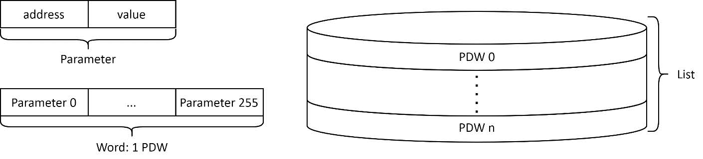
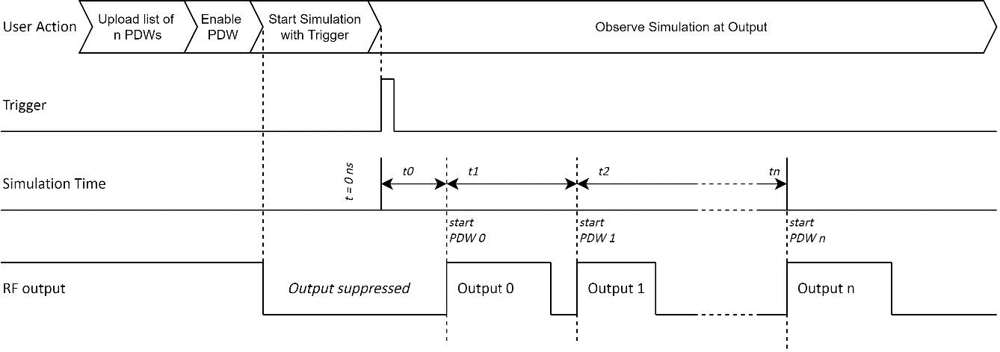
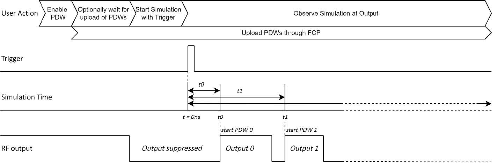
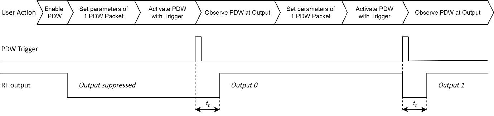
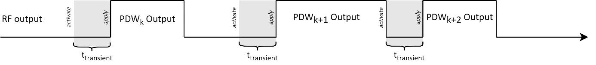
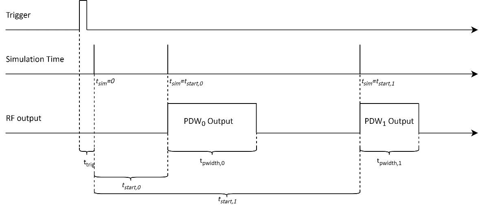
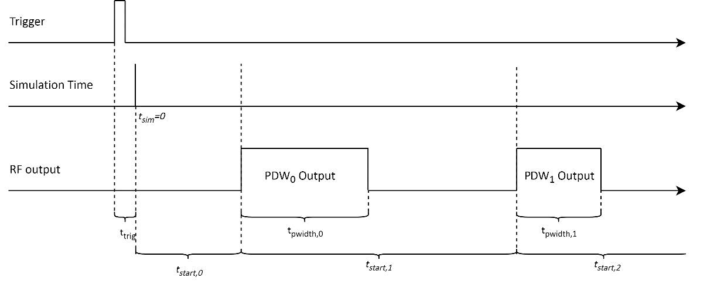
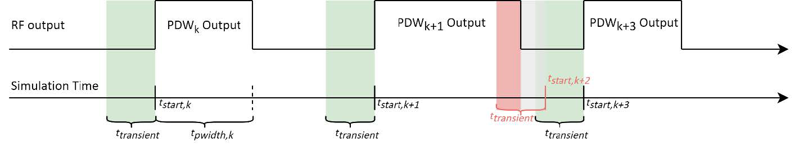
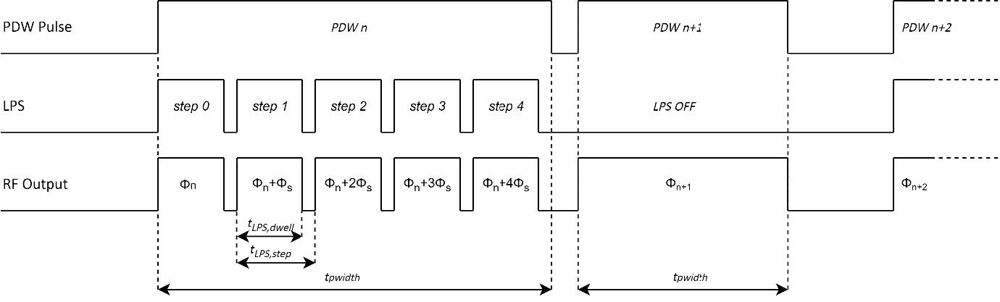

Application Note AN6008
Pulse Descriptor Word for VSG
Important Note
This application note describes the Pulse Descriptor Word (PDW) feature for BNC's Vector Signal Generator (VSG) devices. It may contain information about parts of the feature which are not yet supported, but the information of which may be useful for the user for future projects. The contents of this application note are subject to change as the PDW feature is currently under development and thus adapts as more parts of the feature are released. Not yet supported parts of the PDW feature are marked like this throughout the document.
Table of Contents
| Pulse Descriptor Word Concept | 2 |
| Parameters and Words | 2 |
| Timing | 3 |
| Data Transfer | 3 |
| PDW Mode | 4 |
| Mode Overview | 4 |
| List Mode | 4 |
| Stream Mode (Real-Time) | 5 |
| Single Mode | 5 |
| Application Details | 6 |
| Device Options | 6 |
| Carrier Settings | 7 |
| Waveform Modulation | 7 |
| Control Descriptor Word Option | 7 |
| PDW Timing | 7 |
| PDW Activation | 7 |
| Transient Blanking | 7 |
| PDW Time Mode | 8 |
| Time Parameters | 8 |
| Timing Violation | 9 |
| PDW Linear Phase Sweep | 10 |
| PDW Trigger | 11 |
| Examples | 11 |
| Recommended PDW List uploaded with VSG GUI | 11 |
| Advanced PDW List upload with SCPI commands | 12 |
| PDW Simulation Start in List Mode | 12 |
| PDW Simulation Start in Stream Mode | 12 |
| PDW in Single Mode | 13 |
| External PDW Trigger | 14 |
| Synchronous PDW Trigger for multichannel devices | 15 |
| SCPI Commands | 16 |
| PDW Data | 16 |
| PDW Parameters | 17 |
| PDW Trigger | 18 |
| Synchronous Trigger | 19 |
| PDW Structure | 19 |
| Word Detail | 20 |
| PDW Parameter Types | 23 |
| PDW Default | 23 |
| PDW List File | 24 |
| Appendix | 25 |
| AN6008 Changelog | 25 |
Pulse Descriptor Word Concept
PDW parameters each describe the behavior or value of a distinct property of the device. Therefore, a PDW consists of a set of PDW parameters that define an output signal. This includes various modulation options, carrier settings and further control of the RF output of the device.
With PDWs the user also gains complete control of the duration and timing between modulations. Hence, PDWs are the perfect modulation control feature for setups and applications that include extensive amounts of different modulations or sophisticated carrier sweeps. Setting modulations with PDWs reduces the required memory space compared to storing IQ modulation data on the device for each modulation.
Parameters and Words
The PDW Parameters describe and define different aspects of the RF output signal for the VSG device. They all consist of a distinct address and a value. A complete list of all PDW Parameters with their respective addresses and descriptions of their properties can be found at the end of this document in section PDW Structure.
The Parameters are uploaded to the VSG device and saved as Pulse Descriptor Words. The different PDW upload options are described in section Data Transfer. The saved Words form a List of PDWs. Depending on the active PDW mode, the PDW List is available for one or multiple playbacks. The consecutive playback of multiple PDWs will henceforth be called Simulation.

With one PDW, both the carrier and the modulation are configured. This includes settings for the RF output and switching between different modulation types. The modulations supported with the PDW feature include pulses, frequency modulations, chirps, as well as waveform playback by selecting segment IDs.
Selecting segment IDs with PDWs for playback is only available for waveforms that are stored on the device's memory before PDWs are starting to be applied. Furthermore, restrictions such as parameter limits and constraints on control settings (e.g., availability of simultaneous modulations) naturally apply when deploying PDWs.
Timing
Selecting segment IDs with PDWs for playback is only available for waveforms that are stored on the device's memory before PDWs are starting to be applied. Furthermore, restrictions such as parameter limits and constraints on control settings (e.g., availability of simultaneous modulations) naturally apply when deploying PDWs.
Data Transfer
All PDW Parameters can be updated by sending them to the device. Upload options for PDWs are the following.
- Upload a PDW List from a file with the VSG GUI
- Configure and upload consecutive PDWs with the VSG GUI
- Set PDW Parameters individually through SCPI commands
- Set multiple PDW Parameters (and Words) by using the SCPI command to send block data1
- Send PDW Parameters through the optional FCP interface [PDW Stream mode only]
Section SCPI Commands gives an overview on the SCPI commands available for PDW control. The option to upload a file containing a PDW List with the GUI is only available in List mode. See section PDW List File for details and an example hereof.
PDW Mode
The PDW system can be operated in different modes which differ in their use-cases. For each mode, the upload and playback of PDWs is different. The desired PDW mode must be set before enabling the PDW feature.
Mode Overview
| PDW | Input Interface | PDW Upload | Device Storage | Simulation |
|---|---|---|---|---|
| List | VSG GUI/SCPI commands | Before simulation starts | PDW Memory | All PDSs in List, optionally repeat List |
| Stream | FCP / SCPI commands | Before and during simulation | PDW Buffer (FIFO) | PDWs in order of upload, only once |
| Single | SCPI commands | During simulation | Single PDW register | Each PDW triggered after upload |
List Mode
This mode is suggested if there is a bulk of PDWs that are predetermined and require specific timing relations between each other. It is the default mode to simulate multiple PDWs.
The PDW-file upload is the recommended input form in this mode. Files containing lists of PDWs with their individual parameters can be uploaded to the device through the VSG GUI. The list of PDWs is interpreted and preloaded to the PDW memory on the device. The PDWs in the memory all contain a start time at which the respective parameters are applied to the device's RF output. The timing concept for applying the PDWs saved in the memory is depicted in Figure 2.
A trigger signal is required to start the Simulation of the PDW List. Information on the PDW Trigger Subsystem can be found in section PDW Timing. The List mode also provides the option to repeat the PDW List in one Simulation by setting the List Count.
1See the PDW:DATA SCPI command, explained in section SCPI Commands: PDW Data

Stream Mode (Real-Time)
This mode is ideal for sending PDWs to the device in bursts and obtain real-time streaming of the PDWs.
The PDW Stream mode is only available with the optional FCP Interface, as PDW Parameters are streamed through this external port. PDW Parameters are streamed consecutively and grouped into Words, using the CONFIG_END parameter. Each received PDW is buffered in a FIFO. Thus, PDWs are executed consecutively and applied at their respective START_TIME.
Additional PDWs can be streamed during Simulation and are then queued in the PDW FIFO buffer. Once applied, PDWs are no longer stored in the buffer.
The uploaded Words do not have to contain all possible PDW Parameters. Addresses that are not set will keep the previous value. This allows for fast PDW upload when few bytes of each Word are being set.
For further information on the FCP interface specifically, please consult the Application Note on FCP [3].

Single Mode
This mode does not take into account the START_TIME and PULSE_WIDTH parameters of the PDW, but rather starts pulses on a PDW trigger and keeps them enabled until the next pulse is triggered. Therefore, this mode is a good way for users to test their PDW settings and simulate scenarios that are not as time critical.
The PDW Single mode accepts PDW Parameters through SCPI. The parameters are grouped into Words and uploaded to the device's internal register using the CONFIG_END parameter. The uploaded Words do not have to contain all possible PDW Parameters. Parameters that are not set will keep the previous value, or the default value if they are never set at all.
When triggered, the last uploaded PDW is activated and then applied to the RF output after a transient time (labeled tt). The general concept of this mode is depicted in Figure 4.
An example for a SCPI command sequence in PDW Single Mode can be found in section Examples. Details on the transient time are described in section Transient Blanking.

Application Details
Requirements and Restrictions
Device Options
- The PDW feature is an optional feature that can be equipped on each channel (separately) of an VSG device at the time of ordering. The option PDW must be equipped for each channel of the device to support the PDW functionality described in this document.
- Fast PDW switching and short PDW pulses both require the option UFS (Ultra-Fast Switching). Otherwise, time parameters for PDWs are restricted. Parameter limitations and other PDW specifications for all available device options are listed in section PDW in the VSG datasheet [1].
- Option PHS (Phase coherent switching) is available in combination with option PDW. PHS enables a well-defined deterministic relative phase between individual channels.
- The PDW Stream mode is only available with the option FCP.
- Synchronizing the simulations of multiple channels within the same VSG device is inherently possible as soon as an VSG device with at least two channels with options PDW are purchased. The PDW trigger source SYNC must be used to trigger the PDW Simulation of all desired channels simultaneously. More information can be found in section PDW Trigger.
- Synchronizing PDW Simulations of multiple devices will be available soon and is only available with option SYNC. Please ensure you mention any desire for multi-device synchronization when ordering your VSG devices.
- Please make sure you select all desired options when buying your VSG device.
Carrier Settings
- For one PDW there can only be a single carrier frequency, power and phase set. Detailed information about available parameters can be found in section PDW Structure. Information on parameter ranges can be found in the VSG datasheet [1].
Waveform Modulation
- Segments (QI files for waveform modulation) must be uploaded to the device before the PDW is enabled.
- Only a playback rate of 500 MHz is supported for segments in use with PDW.
- There can only be one selected segment in each PDW.
- It is the user's responsibility to ensure the necessary segments are uploaded to the device before any PDW selects them. Selecting inexistent/not uploaded segments will result in suppressed RF output.
- If the pulse width of a PDW does not match the length of the enabled waveform segment, the waveform segment will be repeated or cut short. The PDW pulse width is the defining parameter for each PDW width.
Control Descriptor Word Option
The VSG devices also provide the option to only control a subset of the parameters of the PDW. This subset is called Control Descriptor Word and allows the user to control only carrier parameters and waveform segment playback. The CDW (Control Descriptor Word) option does not include timing parameters and is limited to only support the upload of a single CDW at a time. Furthermore, it is only available in PDW Stream mode and requires the options UFS and FCP.
PDW Timing
PDW Activation
Multiple PDWs can be stored on the device. Depending on the PDW mode, the PDWs are either saved as a List on the device for replay or streamed to the device as subsequent PDWs to be replayed only once. Details on PDW storage limitations can be found in the VSG datasheet [1].
Once saved on the device, the PDWs can be replayed in a Simulation that activates and applies each PDW at the RF output, according to its timing parameter specifications. A trigger starts the Simulation of the PDWs. For specific information on PDW Triggers, please see section PDW Trigger.
Transient Blanking
Naturally, when a PDW is activated, there is a transient period while the device transitions between different carrier and modulation settings, before the signal is applied at the RF output, as shown in Figure 5. With the PDW feature, these transition periods are blanked to prohibit unexpected behavior at the output.
The transient period is a fixed value of time and directly dictates the minimum switching time. Specific values can be found in the PDW section of the VSG Datasheet [1].

PDW Time Mode
The PDW Time Mode defines how the START_TIME parameter is interpreted by the device and when the simulation time is reset.
Absolute Time Mode:
Each PDW is activated at START_TIME after the Simulation trigger. The Simulation time starts with the Simulation trigger. PDWs are activated when their START_TIME equals the Simulation time. Thus, the START_TIME is interpreted as an absolute value.
Relative Time Mode:
The first PDW is activated at START_TIME after the Simulation trigger. Each consecutive PDW is then automatically activated at the START_TIME after the last activation. Thus, the START_TIME is interpreted relative to the start of the previous PDW. When getting the Simulation time of the device, the time since the last application of a PDW will be displayed.
Time Parameters
There are multiple parameters that describe the timing of each PDW. The most significant ones are described here and graphically represented in Figure 6 and Figure 7 which show the start of a PDW List simulation for each Time Mode.
- START_TIME
The time at which a PDW is applied at the RF output. The START_TIME must be set such that it allows for the mandatory transient period after the previous pulse. If this PDW timing requirement is not met, the PDW with violating time parameters is discarded and not applied at the output. Timing Violations are explained in the next subsection. - PULSE_WIDTH
Defines the width of the PDW pulse at the RF output before it is suppressed again. - Simulation Trigger Setup Time
The time between the arrival of a trigger at the device and the start of the Simulation time. Specific values can be found in the PDW section of the VSG Datasheet [1]. - FCP Activation Setup Time
The time required to process a received PDW through FCP. This is the time between receiving a CONFIG_END parameter at the FCP interface and the first possible point in time a PDW can be activated. Specific values can be found in the FCP section of the VSG Datasheet [1].


Timing Violation
For a PDW to meet the timing requirements, it must comply with the following rules:
- The START_TIME must arrive after the falling edge of the previous PDW pulse
- The PDW must be uploaded, so that when read from the PDW memory or PDW buffer FIFO, the START_TIME can be met. As PDWs are read consecutively, they must be uploaded in the correct order, especially when using the absolute Time Mode. Also, when uploading PDWs through FCP, the FCP activation setup time must be met.
If any of these conditions are violated, the respective PDW is discarded at its activation. Figure 8 depicts a scenario with PDW k+2 being discarded during the pulse width of the previous PDW, as this happens to be its activation time. PDW k+2 thus clearly violates the first rule.

The VSG device keeps track of the number of discarded PDWs. The respective SCPI command can be found in section SCPI Commands. The counter of discarded PDWs is reset when a new Simulation is triggered, or when the Simulation of one PDW List is restarted in case the List Count is bigger than 1 in a List mode Simulation.
PDW Linear Phase Sweep
The PDW Parameters support the option for a linear phase sweep (LPS) on pulse. This section gives an overview of the different PDW Parameters to control the phase sweep and gives a graphical example in Figure 9. The following parameters are required to define the phase sweep for one PDW.
- PHASE_MODE
In the figure below, the nth PDW and the n+2nd PDW have the LPS enabled, which means the PHASE_MODE is set to sweep. The n+1st PDW has the LPS state disabled, which equals a fixed PHASE_MODE. Naturally, the PHASE_MODE must be set to either fixed or sweep to define if each PDW should contain a linear phase sweep. - PHASE_STEP
This parameter is utilized to define the difference in phase between two steps in the linear phase sweep. Please note that the sweep always starts at the PHASE (labeled Φn) value at the start of one PDW and the PHASE_STEP (labeled Φs) denotes the increment in phase with each LPS step inside of one PDW. - SWEEP_DWELL
The LPS dwell time, labeled tLPS,dwell in Figure 9, describes how long each phase step is active at the output. This time must be equal or less than the SWEEP_STEP. - SWEEP_STEP
During one sweep step, the set phase is constant. The sweep step time is set for one PDW. If the SWEEP_DWELL time is less than the SWEEP_STEP time, the LPS generates a pulse with an off time during which the output is blanked.

PDW Trigger
There are several options for triggering a PDW simulation.
- Immediate trigger of the PDW Trigger subsystem as soon as the PDW state is turned on. Requires PDW:TRIG:SOUR to be set to immediate. The Simulation is automatically retriggered after it is finished, with a Simulation Trigger Setup Time delay.
- Internal trigger of the PDW Trigger subsystem, which can be sent with the SCPI command PDW:TRIG. Set the PDW:TRIG:SOUR to bus.
- External trigger signal sent through an MF input port. Check out the External PDW Trigger Example in the next section for details.
- Synchronous trigger to start Simulation of multiple channels simultaneously. Requires PDW:TRIG:SOUR to be set to synchronous and the trigger to be executed with an internal synch. trigger TRIG:SYNC or an external synch. trigger - see section Synchronous Trigger in SCPI Commands for useful commands and section Synchronous PDW Trigger for multichannel devices for an example.
Examples
Recommended PDW List uploaded with VSG GUI
Section PDW List File describes the required file format and content for any PDW List file that is uploaded through the GUI.
For the upload process, open the VSG GUI and select List mode in the PDW section. Simply load the content of the desired file for upload with "Add CSV", check the displayed list for correct interpretation and upload it to the device. The VSG GUI informs the user in case of any incorrect or incomplete settings.
Be advised that there is a limited amount of PDWs that can be uploaded in one list.
Advanced PDW List upload with SCPI commands
The following passage explains how to upload a list of PDWs to the device. However, it is strongly suggested to upload PDW Lists by loading .csv files to the device with the GUI to avoid unsupported parameter combinations and timing violations.
The following sequence of commands is an example for setting the Parameters for one PDW element in a list of PDWs. The last command of this sequence tells the device that all desired Parameters are set and the PDW is complete.
PDW:STAR:TIME 5ms Set start time of PDW to 5 milliseconds
PDW:PWID 1ms Set the pulse width of the PDW to 1 millisecond
PDW:MARK 1 Set Marker of PDW to 1
PDW:FREQ 2e9 Set carrier frequency of PDW to 2 GHz
PDW:POW -5 Set fixed output power of PDW to -5 dBm
PDW:PHAS 0 Set fixed output phase of PDW to 0 rad
PDW:OUTP:STAT ON Enable RF output of PDW
PDW:WAV:STAT ON Enable the waveform modulation of the PDW
PDW:WAV:WSEG 1 Set the waveform segment ID of the PDW to 1
PDW:CONF:END End setting Parameters for this PDW (1 PDW in List)Important: The SCPI commands must be sent in the correct consecutive order, especially with the PDW:CONF:END command. Otherwise, Parameters might be assigned to incorrect Words which results in unexpected output behavior of the device.
Alternative: The PDWs can also be sent with the PDW:DATA SCPI command that supports block data. Be sure to place the Parameters containing configuration information like the CONF_END value after the descriptive Parameters for one PDW to group the PDWs together correctly.
PDW Simulation Start in List Mode
After uploading the PDW list to the device, the PDW Simulation can be started. Please make sure that the intended Time Mode is selected before the Simulation starts, as it dictates how the START_TIME values are interpreted during Simulation. The following set of SCPI commands is an example of how to start a PDW simulation with an internal trigger.
PDW:STAR:TIME:MODE ABS Set the Time Mode to absolute.
PDW:LIST:COUN 100 Set the List Count to 100 (repeat PDW List 100 times).
PDW:TRIG:SOUR BUS Set the trigger source to bus.
PDW:MODE LIST Set the PDW mode to List.
PDW:STAT ON Enable the PDW state.
PDW:TRIG Set an internal trigger signal. Starts the Simulation.PDW Simulation Start in Stream Mode
For the PDW Stream mode, the buffer FIFO does not necessarily need to be filled before the PDW Simulation can be started. Before enabling the PDW in Stream mode, please make sure that the intended Time Mode is selected as it dictates how the START_TIME values are interpreted during Simulation. The following set of SCPI commands is an example of how to start a PDW simulation with an internal trigger and when to start streaming PDWs.
PDW:STAR:TIME:MODE ABS Set the Time Mode to absolute.
PDW:TRIG:SOUR BUS Set the trigger source to bus.
PDW:MODE STR Set the PDW mode to Stream.
PDW:STAT ON Enable the PDW state.The device can now receive streamed parameters and queue PDWs in the FIFO buffer. The simulation time has not started yet, so PDWs are not activated yet.
PDW:TRIG Set an internal trigger signal.Once the simulation is started by trigger, PDWs can still be streamed to the device and will be queued in the FIFO buffer for activation. The Simulation in PDW Stream mode only ends once the PDW state is disabled.
PDW in Single Mode
This example shows a complete SCPI sequence for the PDW Single mode, with the following steps:
- Set the device configuration and enable PDW in Single mode.
- Set parameters for the first PDW with frequency 2 GHz, power 10.5 dBm, Waveform Modulation on Pulse with segment ID 3
- Start simulating the first PDW with a Trigger.
- Set parameters for the second PDW with frequency 2 GHz, power 3 dBm, CW only (no modulation on pulse)
- Start simulating the second PDW with a Trigger.
In case you would like to utilize a different trigger source like the external trigger or synchronous trigger, please skip the first SCPI command and follow the instructions of example External PDW Trigger or Synchronous PDW Trigger for multichannel devices respectively, before proceeding with the following commands.
This example expects a waveform with segment ID 3 already being uploaded to the device. For further details on how to upload waveforms to VSG devices, please consult [4].
First, the PDW trigger source is set to bus, which will allow for the SCPI command PDW:TRIG to initiate a PDW trigger event. Then, the correct PDW mode is selected and the PDW functionality enabled.
PDW:TRIG:SOUR BUS Set the PDW Trigger source to Bus.
PDW:MODE SING Set the PDW mode to Single.
PDW:STAT ON Enable the PDW state.Enabling the PDW results in the RF output being blanked until the first PDW is applied.
As soon as the PDW is enabled in Single mode, the first PDW can be set. Any parameters that are not set will keep their default values. In this example, the first PDW will keep the default phase value and phase sweep settings.
PDW:FREQ 2e9 Set the carrier frequency to 2 GHz.
PDW:POW 10.5 Set the carrier RF power level to 10.5 dBm.
PDW:OUTP:STAT ON Enable the RF output.
PDW:WAV:STAT ON Enable waveform modulation on pulse.
PDW:WAV:WSEG 3 Set the selected waveform segment ID to 3.
PDW:CONF:END End this PDW and save it in the device for playback.The CONFIG_END parameter is required at the end of each PDW. It tells the device that this (first) PDW configuration is finished and ready to be activated. The SCPI commands must be sent in the correct consecutive order, especially with the PDW:CONF:END command. Otherwise, Parameters might be assigned to incorrect Words which results in unexpected output behavior of the device.
The PDW is then activated with a PDW trigger event. For the SCPI command, please be aware that there is a latency caused by the ethernet connection to the device as well as a processing latency of the device before the PDW is activated.
PDW:TRIG Trigger the uploaded PDW.The RF output first shows the blanked transient and then the set PDW.
Now, a second PDW can be set. Any parameters that are not set anew will keep their previous values like the carrier frequency of 2GHz in this example.
PDW:POW 3 Set the carrier RF power level to 3 dBm.
PDW:WAV:STAT OFF Enable waveform modulation on pulse.
PDW:CONF:END End this PDW and save it in the device for playback.After the PDW:CONF:END, the second PDW can be activated with a trigger. Before the new PDW is triggered, the previously activated PDW is still applied at the RF output.
PDW:TRIG Trigger the uploaded PDW.The RF output again first shows the blanked transient and then the set (second) PDW.
Important: The SCPI commands must be sent in the correct consecutive order, especially with the PDW:CONF:END command. Otherwise, Parameters might be assigned to incorrect Words which results in unexpected output behavior of the device.
External PDW Trigger
The following set of SCPI commands is an example for configuring the device to detect and accept external PDW trigger signals.
PDW:TRIG:SOUR EXT Set the PDW trigger source to external
PDW:TRIG:EXT:SOUR MF1 Set the external trigger source to MF1 port
PDW:TRIG:EXT:SLOP POS Set the external trigger slope detection to positiveNow a positive edge can be sent on the MF1 port. This will trigger the PDW Simulation of the currently enabled PDW mode. The Simulation will not be triggered if:
- The PDW:STATe is disabled or
- The trigger source is not set correctly or
- List mode: The PDW List is empty (nothing saved in the memory)
Synchronous PDW Trigger for multichannel devices
The following set of SCPI commands is an example for configuring a two-channel device to use synchronous PDW trigger signals on both channels. This configuration is ideal to synchronously start the time base of PDW simulations on multiple channels.
With this setting, the PDW trigger subsystems on each individual channel are set to listen to a single global synchronous trigger event.
First, the source for the synchronous trigger signal should be set. The two main options are to start the synchronized PDW simulations with either a SCPI command or with an external trigger flank at one of the MF input ports.
Option 1:
TRIG:SYNC:SOUR BUS Set the synchronous trigger source to bus, for SCPI.Option 2:
TRIG:SYNC:SOUR EXT Set the synchronous trigger source to external.
TRIG:SYNC:EXT:SOUR MF1 Set the external sync. trigger source to MF1 port.
TRIG:SYNC:SLOP POS Set the MF1 input to trigger on positive edgesNext, each channel that must be told to start their PDW simulations synchronously by setting the synchronous trigger as the PDW trigger source.
SOUR:SEL 1 Select device channel 1.
PDW:TRIG:SOUR SYNC Set the PDW trigger source to synchronous on CH 1.
SOUR:SEL 2 Select device channel 2.
PDW:TRIG:SOUR SYNC Set the PDW trigger source to synchronous on CH 2.Finally, the synchronous trigger can be activated to start the PDW simulations on all channels. Depending on the source of the synchronous trigger, use the following.
Option 1:
TRIG:SYNC Triggers all subsystems listening to synchronous trigger sources.Option 2: A positive edge must be sent on the MF1 port.
Important: The Simulation will not be triggered if:
- The PDW:STATe is disabled or
- The trigger source is not set correctly or
- List mode: the PDW List is empty (nothing saved in the memory)
SCPI Commands
PDW Settings
[SOURce<ch>:]PDW:STATe ON|OFF|0|1Set the PDW State. Enabling the PDW state disables the control of RF output settings.
Example: PDW:STATE ON
[SOURce<ch>:]PDW:MODE LIST|STReam|SINGleSet the PDW mode. See section PDW Mode for details on each mode. PDW:STAT must be turned off before mode is switched.
Example: PDW:MODE LIST
[SOURce<ch>:]PDW:STARt:TIME:MODE RELative|ABSoluteSet the Time Mode to interpret the START_TIME value either relative to the previous PDW or as an absolute value of Simulation time. For more information on the start time, see section PDW Timing. The start time mode is set to relative per default.
Example: PDW:STAR:TIME:MODE ABS
[SOURce<ch>:]PDW:CONDition:DISCarded?Get the number of PDWs that were discarded due to timing violations.
Example: PDW:COND:DISC?
[SOURce<ch>:]PDW:SIMulation:TIME?Get the Simulation time of the device. See section PDW Timing: PDW Time Mode for an explanation on the Simulation time.
Example: PDW:SIM:TIME?
[SOURce<ch>:]PDW:LIST:DELeteDelete all PDWs saved on the device in List mode.
Example: PDW:LIST:DEL
[SOURce<ch>:]PDW:LIST:COUNt <repeat>Set the number of times the list of PDWs is to be repeated in one Simulation run. The repeat value must be an unsigned integer.
Example: PDW:LIST:COUN 2
[SOURce<ch>:]PDW:STReam:COUNt?Get the number of saved PDW elements in the FIFO buffer. Returns zero if not in PDW Stream mode.
Example: PDW:STR:COUN?
PDW Data
[SOURce<ch>:]PDW:DATA <addr>,<param_data>Set the value for one specific address in the PDW.
Example: PDW:DATA 4, 1 Enable the waveform state (Addr. 4)
[SOURce<ch>:]PDW:DATA <block data>Set the value of multiple addresses with block data. Also allows values for addresses of multiple PDWs when each Word is terminated with a CONFIG_END of the PDW CONFIG_END Parameter. The block data has IEEE488.2 definite block data format:
#<num_digits><byte_count><data bytes><num_digits> specifies how many digits are contained in <byte_count>.
<byte_count> specifies how many data bytes follow in <data_bytes>.
Example of definite block data:
#18xxxxxxxx
#18...: byte count is one digit wide
#18...: 8 data bytes will follow
...xxxxxxxx: 8 bytes of data (4 address-parameter pairs)The data itself consists of address-parameter pairs that are 16 bits wide per pair. Each of these pairs consists of one address and their respective Parameter value. The address is 8 bits wide and is followed by an 8 bit wide value for the Parameter. All bytes are two's complement values. The sent addresses do not have to be consecutive. Addresses that are not set for a Word simply keep their default value. The CONFIG_END Parameter may be utilized when a full list of PDWs is transmitted:
- CONFIG_END signals the end of a PDW. The subsequent address-parameter pairs are set to the next PDW in the List.
[SOURce<ch>:]PDW:DATA:FCP? <addr>Get the most recently set value of one specific address in the PDW.
Example: PDW:DATA:FCP? 4 Returns 1 if the last sent waveform state is enabled.
[SOURce<ch>:]PDW:DATA:OUTPut? <addr>Get the set value of one specific address of the active PDW.
Example: PDW:DATA:OUTP? 55 Returns 1 byte of carrier power of the active PDW.
For a list of all SCPI commands and detailed descriptions, please consult the Programmer's Manual [2].
PDW Parameters
Available SCPI commands for setting Parameters are listed here. For details on their functionality please consult the descriptions for each Parameter in section Word Detail.
Configuration
[SOURce<ch>:]PDW:CONFigure:END
[SOURce<ch>:]PDW:WAVeform:STATe ON|OFF|0|1
[SOURce<ch>:]PDW:MARKer <integer>
[SOURce<ch>:]PDW:STARt:TIME <float[s]>
[SOURce<ch>:]PDW:PWIDth <float[s]>Carrier & Output
[SOURce<ch>:]PDW:OUTPut:STATe ON|OFF|0|1
[SOURce<ch>:]PDW:FREQuency <float[Hz]>
[SOURce<ch>:]PDW:POWer <float[dBm]>
[SOURce<ch>:]PDW:PHASe <float[rad]>Waveform Modulation
[SOURce<ch>:]PDW:WAVeform:WSEGment <integer>Phase Sweep
[SOURce<ch>:]PDW:PHASe:MODE FIXed|SWEep
[SOURce<ch>:]PDW:PHASe:STEP <float[rad]>
[SOURce<ch>:]PDW:SWEep:DWELl <float[s]>
[SOURce<ch>:]PDW:SWEep:STEP <float[s]>PDW Trigger
[SOURce<ch>:]PDW:TRIGger[:SEQuence][:IMMediate]Executes a PDW specific internal trigger event.
[SOURce<ch>:]PDW:TRIGger[:SEQuence]:SOURce IMMediate|BUS|EXTernal|SYNChronousSets the trigger source. Set to immediate per default.
IMM: No waiting for a trigger event occurs. Constantly, immediately triggered.
BUS: Trigger source is the command PDW:TRIG[:IMM].
EXT: Trigger source is an externally applied signal or the command PDW:TRIG[:IMM].
SYNC: Tigger source is the synchronous trigger subsystem, see next section for commands.
[SOURce<ch>:]PDW:TRIGger[:SEQuence]:EXTernal:DELay <float>Sets the amount of time to delay the response to the trigger. Float value in seconds.
[SOURce<ch>:]PDW:TRIGger[:SEQuence]:EXTernal:SOURce[:PORT] MF1|MF2Select which multi-function channel is used for the external trigger input.
[SOURce<ch>:]PDW:TRIGger[:SEQuence]:EXTernal:SLOPe POSitive|NEGativeSets the polarity for an external trigger signal.
[SOURce<ch>:]PDW:TRIGger[:SEQuence]:ABORtInhibits the trigger signal.
[SOURce<ch>:]PDW:TRIGger[:SEQuence]:INITiate[:IMMediate]Initiates the system: Trigger signals will be accepted by the trigger system.
[SOURce<ch>:]PDW:TRIGger[:SEQuence]:INITiate:CONTinuous ON|OFF|1|0ON: Trigger signals will be accepted by the trigger system continuously.
OFF: Trigger signals will be accepted by the trigger until it's triggered once.
[SOURce<ch>:]PDW:TRIGger[:SEQuence]:OUTPut:POLarity NORMal|INVertedSets the trigger output signal polarity.
[SOURce<ch>:]PDW:TRIGger[:SEQuence]:OUTPut:DELay <float>Sets the delay of the trigger output signal in seconds.
[SOURce<ch>:]PDW:TRIGger[:SEQuence]:OUTPut:PWIDth <float>Sets the pulse width of the trigger output signal in seconds.
Synchronous Trigger
TRIGger:SYNChronous[:IMMediate]Triggers all subsystems (e.g. PDW Trigger) listening to synchronous trigger sources.
TRIGger:SYNChronous:SOURce IMMediate|BUS|EXTernalSets the trigger source for the synchronous trigger subsystem. Set to immediate per default. IMM: No waiting for a trigger event occurs. Constantly, immediately triggered.
BUS: Trigger source is the command TRIG:SYNC[:IMM].
EXT: Trigger source is an externally applied signal or the command TRIG:SYNC[:IMM].
TRIGger:SYNChronous:EXTernal:SOURce[:PORT] MF1|MF2Select which multi-function channel is used for the external trigger input.
TRIGger:SYNChronous:SLOPe POSitive|NEGativeSets the polarity for an external synchronous trigger signal.
PDW Structure
The following sections describe the structure of a Pulse Descriptor Word that consists of several parameters. Marked fields represent parameters that are intended for future implementation and not yet supported. Please note that details for unsupported parameters are subject to change.
The list in section Word Detail does not entail limitations of the parameters, as these are device dependent. For more information about the parameter limits, please consult the PDW section in the Datasheet [1] of your VSG device.
Frequency, power, phase and time parameters share a common fixed-point parameter definition, which is described in section PDW Parameter Types at the very end of this document.
Table 1: Overview of the PDW structure
| Address Range | Parameter Name | Parameter Group |
|---|---|---|
| 1 | PDW Configuration | PDW Setting |
| 2 – 3 | Reserved | |
| 4 | PDW Modulation | |
| 5 – 6 | Reserved | |
| 7 | PDW Marker | |
| 8 – 15 | Reserved | |
| 16 – 23 | Start Time | PDW Timing |
| 24 – 31 | Pulse Width | |
| 32 – 33 | Waveform Segment | Waveform Modulation |
| 34 – 47 | Reserved | |
| 48 | RF Output | Carrier Output |
| 49 – 54 | Frequency | |
| 55 – 56 | Power | |
| 57 – 58 | Fixed Phase | |
| 60 – 69 | Reserved | Offset |
| 70 – 89 | Reserved | FM/PM |
| 90 – 97 | Reserved | AM |
| 98 – 105 | Reserved | Chirp |
| 106 | Sweep On Pulse | Phase Sweep |
| 107 – 108 | Phase Step | |
| 109 – 116 | Sweep Dwell Time | |
| 117 – 124 | Sweep Step Time | |
| 125 – 255 | Reserved | Reserved |
Word Detail
| Address | Parameter Name | Bits | Bit Name | SCPI Command | Description |
|---|---|---|---|---|---|
| 0 | Reserved | [7:0] | RESERVED | ||
| 1 | PDW Configuration | 0 | CONFIG_END | PDW:CONF:END | Signal the end of one PDW, meaning all necessary parameters have been sent and the following parameters will pertain to the subsequent PDW. Default: 0 |
| 1 | PULSE_START_IMM | Decide whether the PDW is applied as soon as the previous PDW has ended. 0: Use the START_TIME value. 1: Apply immediately after previous PDW. | |||
| 2 | PULSE_WIDTH_INF | Decide whether the PDW pulse width is infinite. 0: Use the PULSE_WIDTH value. 1: Pulse finishes at start of subsequent PDW. | |||
| [7:3] | RESERVED | ||||
| 2 | Reserved | [7:0] | |||
| 3 | Reserved | [7:0] | |||
| 4 | PDW Modulation | 0 | WAVE_STATE | PDW:WAV:STAT | Enable/Disable Waveform Modulation. Default: 0 |
| 1 | FM_STATE | Enable/Disable Frequency Modulation | |||
| 2 | PM_STATE | Enable/Disable Phase Modulation | |||
| 3 | AM_STATE | Enable/Disable Amplitude Modulation. | |||
| 4 | CHIRP_STATE | Enable/Disable Chirp Modulation | |||
| [7:5] | RESERVED | ||||
| 5 | Reserved | [7:0] | RESERVED | ||
| 6 | Reserved | [7:0] | RESERVED | ||
| 7 | PDW Marker | [7:0] | MARKER | PDW:MARK | 8 bits of marker states that can be connected to the multi-function output ports. Default: Marker[7:0] = x00 |
| 8 | Reserved | [7:0] | RESERVED | ||
| 9 | Reserved | [7:0] | RESERVED | ||
| 10 | Reserved | [7:0] | RESERVED | ||
| 11 | Reserved | [7:0] | RESERVED | ||
| 12 | Reserved | [7:0] | RESERVED | ||
| 13 | Reserved | [7:0] | RESERVED | ||
| 14 | Reserved | [7:0] | RESERVED | ||
| 15 | Reserved | [7:0] | RESERVED | ||
| 16 | Pulse Start Time 0 | [7:0] | START_TIME4 [7:0] | PDW:STAR:TIME | Start time of the PDW in seconds. Time at which PDW is applied to RF output. Consult section PDW Time Mode for details on interpreting this parameter. See Figure 6 and Figure 7 for graphical explanations. Minimum, maximum and resolution according to device limitations5. Default: 1ms |
| 17 | Pulse Start Time 1 | [7:0] | START_TIME4 [15:8] | ||
| 18 | Pulse Start Time 2 | [7:0] | START_TIME4 [23:16] | ||
| 19 | Pulse Start Time 3 | [7:0] | START_TIME4 [31:24] | ||
| 20 | Pulse Start Time 4 | [7:0] | START_TIME4 [39:32] | ||
| 21 | Pulse Start Time 5 | [7:0] | START_TIME4 [47:40] | ||
| 22 | Pulse Start Time 6 | [7:0] | START_TIME4 [55:48] | ||
| 23 | Pulse Start Time 7 | [7:0] | START_TIME4 [63:56] | ||
| 24 | Pulse Width 0 | [7:0] | PULSE_WIDTH4 [7:0] | PDW:PWID | Width of PDW pulse. See Figure 6 for a graphical explanation. Minimum, maximum and resolution according to device limitations5. Default: 1ms |
| 25 | Pulse Width 1 | [7:0] | PULSE_WIDTH4 [15:8] | ||
| 26 | Pulse Width 2 | [7:0] | PULSE_WIDTH4 [23:16] | ||
| 27 | Pulse Width 3 | [7:0] | PULSE_WIDTH4 [31:24] | ||
| 28 | Pulse Width 4 | [7:0] | PULSE_WIDTH4 [39:32] | ||
| 29 | Pulse Width 5 | [7:0] | PULSE_WIDTH4 [47:40] | ||
| 30 | Pulse Width 6 | [7:0] | PULSE_WIDTH4 [55:48] | ||
| 31 | Pulse Width 7 | [7:0] | PULSE_WIDTH4 [63:56] | ||
| 32 | Waveform Segment 0 | [7:0] | WAVE_WSEG [7:0] | PDW:WAV:WSEG | Waveform Segment ID. Unsigned integer. It is the user's responsibility to ensure the selected segment IDs exist in the device's segment memory. Also see section Requirements and Restrictions. Default: 0 |
| 33 | Waveform Segment 1 | [7:0] | WAVE_WSEG [15:8] | ||
| 34 | Waveform Sequence 0 | [7:0] | WAVE_WSEQ [7:0] | Waveform Sequence ID. Unsigned integer | |
| 35 | Waveform Sequence 1 | [7:0] | WAVE_WSEQ [15:8] | ||
| 36 | Reserved | [7:0] | RESERVED | ||
| 37 | Reserved | [7:0] | RESERVED | ||
| 38 | Reserved | [7:0] | RESERVED | ||
| 39 | Reserved | [7:0] | RESERVED | ||
| 40 | Reserved | [7:0] | RESERVED | ||
| 41 | Reserved | [7:0] | RESERVED | ||
| 42 | Reserved | [7:0] | RESERVED | ||
| 43 | Reserved | [7:0] | RESERVED | ||
| 44 | Reserved | [7:0] | RESERVED | ||
| 45 | Reserved | [7:0] | RESERVED | ||
| 46 | Reserved | [7:0] | RESERVED | ||
| 47 | Reserved | [7:0] | RESERVED | ||
| 48 | RF Output | 0 | OUTP_STATE | PDW:OUTP:STAT | RF output state for this PDW. 0: Disable the RF output. 1: Enable the RF output. Default: Device OUTP:STAT default. |
| [7:1] | RESERVED | ||||
| 49 | Frequency 0 | [7:0] | FREQ1 [7:0] | PDW:FREQ | Carrier frequency value in Hz. Minimum and maximum determined by device limitations5. Resolution determined by device limitations5 and PDW frequency format1. Default: Device frequency default. |
| 50 | Frequency 1 | [7:0] | FREQ1 [15:8] | ||
| 51 | Frequency 2 | [7:0] | FREQ1 [23:16] | ||
| 52 | Frequency 3 | [7:0] | FREQ1 [31:24] | ||
| 53 | Frequency 4 | [7:0] | FREQ1 [39:32] | ||
| 54 | Frequency 5 | [7:0] | FREQ1 [47:40] | ||
| 55 | Power 0 | [7:0] | POW2 [7:0] | PDW:POW | Carrier power value (RMS) in dBm. Minimum and maximum determined by device limitations5. Resolution determined by device limitations5 and PDW power format2. Default: Device power default. |
| 56 | Power 1 | [7:0] | POW2 [15:8] | ||
| 57 | Phase 0 | [7:0] | PHASE3 [7:0] | PDW:PHAS | Carrier phase value, in PDW phase format3. Resolution determined by device limitations5 and PDW phase format3. Default: Device phase default. |
| 58 | Phase 1 | [7:0] | PHASE3 [15:8] | ||
| 59 | Reserved | [7:0] | RESERVED | ||
| 60 | Frequency Offset 0 | [7:0] | OFFSET_FREQ1 [7:0] | Offset frequency [Hz] in respect to Carrier frequency. (signed value) | |
| 61 | Frequency Offset 1 | [7:0] | OFFSET_FREQ1 [15:8] | ||
| 62 | Frequency Offset 2 | [7:0] | OFFSET_FREQ1 [23:16] | ||
| 63 | Frequency Offset 3 | [7:0] | OFFSET_FREQ1 [31:24] | ||
| 64 | Frequency Offset 4 | [7:0] | OFFSET_FREQ1 [39:32] | ||
| 65 | Frequency Offset 5 | [7:0] | OFFSET_FREQ1 [47:40] | ||
| 66 | Amplitude Offset 0 | [7:0] | OFFSET_AMP2 [7:0] | Offset amplitude [dB] in respect to carrier amplitude. Must be negative. (signed value) | |
| 67 | Amplitude 1 | [7:0] | OFFSET_AMP2 [15:8] | ||
| 68 | Phase Offset 0 | [7:0] | OFFSET_PHASE3 [7:0] | Offset phase in respect to carrier phase. (signed value) | |
| 69 | Phase Offset 1 | [7:0] | OFFSET_PHASE3 [15:8] | ||
| 70 | FM Frequency 0 | [7:0] | FM_FREQ1 [7:0] | Frequency modulation: frequency offset | |
| 71 | FM Frequency 1 | [7:0] | FM_FREQ1 [15:8] | ||
| 72 | FM Frequency 2 | [7:0] | FM_FREQ1 [23:16] | ||
| 73 | FM Frequency 3 | [7:0] | FM_FREQ1 [31:24] | ||
| 74 | FM Frequency 4 | [7:0] | FM_FREQ1 [39:32] | ||
| 75 | FM Frequency 5 | [7:0] | FM_FREQ1 [47:40] | ||
| 76 | FM Deviation 0 | [7:0] | FM_DEV1 [7:0] | Frequency modulation: frequency deviation | |
| 77 | FM Deviation 1 | [7:0] | FM_DEV1 [15:8] | ||
| 78 | FM Deviation 2 | [7:0] | FM_DEV1 [23:16] | ||
| 79 | FM Deviation 3 | [7:0] | FM_DEV1 [31:24] | ||
| 80 | FM Deviation 4 | [7:0] | FM_DEV1 [39:32] | ||
| 81 | FM Deviation 5 | [7:0] | FM_DEV1 [47:40] | ||
| 82 | ΦM Frequency 0 | [7:0] | PM_FREQ1 [7:0] | Phase modulation: phase deviation | |
| 83 | ΦM Frequency 1 | [7:0] | PM_FREQ1 [15:8] | ||
| 84 | ΦM Frequency 2 | [7:0] | PM_FREQ1 [23:16] | ||
| 85 | ΦM Frequency 3 | [7:0] | PM_FREQ1 [31:24] | ||
| 86 | ΦM Frequency 4 | [7:0] | PM_FREQ1 [39:32] | ||
| 87 | ΦM Frequency 5 | [7:0] | PM_FREQ1 [47:40] | ||
| 88 | ΦM Deviation 0 | [7:0] | PM_DEV3 [7:0] | Phase modulation: phase deviation | |
| 89 | ΦM Deviation 1 | [7:0] | PM_DEV3 [15:8] | ||
| 90 | AM Frequency 0 | [7:0] | AM_FREQ1 [7:0] | Amplitude modulation: frequency offset | |
| 91 | AM Frequency 1 | [7:0] | AM_FREQ1 [15:8] | ||
| 92 | AM Frequency 2 | [7:0] | AM_FREQ1 [23:16] | ||
| 93 | AM Frequency 3 | [7:0] | AM_FREQ1 [31:24] | ||
| 94 | AM Frequency 4 | [7:0] | AM_FREQ1 [39:32] | ||
| 95 | AM Frequency 5 | [7:0] | AM_FREQ1 [47:40] | ||
| 96 | AM Depth 0 | [7:0] | AM_DEPTH [7:0] | Amplitude modulation: depth | |
| 97 | AM Depth 1 | [7:0] | AM_DEPTH [15:8] | ||
| 98 | Chirp Rate 0 | [7:0] | CHIRP_RATE [7:0] | Chirp rate in kHz/µs | |
| 99 | Chip Rate 1 | [7:0] | CHIRP_RATE [15:8] | ||
| 100 | Chirp Rate 2 | [7:0] | CHIRP_RATE [23:16] | ||
| 101 | Chirp Rate 3 | [7:0] | CHIRP_RATE [31:24] | ||
| 102 | Chirp Shape | 0 | CHIRP_SHAPE_SIN | Chirp shape is sine. One shape per PDW. | |
| 1 | CHIRP_SHAPE_RUP | Chirp shape is ramp up. One shape per PDW. | |||
| 2 | CHIRP_SHAPE_RDOWN | Chirp shape is ramp down. One shape per PDW. | |||
| 3 | CHIRP_SHAPE_TRIAN | Chirp shape is triangle. One shape per PDW. | |||
| 4 | CHIRP_SHAPE_SQU | Chirp shape is square. One shape per PDW. | |||
| [7:5] | RESERVED | ||||
| 103 | Reserved | [7:0] | RESERVED | ||
| 104 | Reserved | [7:0] | RESERVED | ||
| 105 | Reserved | [7:0] | RESERVED | ||
| 106 | Sweep on Pulse | 0 | PHASE_MODE | PDW:PHAS:MODE | Enable/Disable linear Phase Sweep on Pulse. 0: fixed phase in PDW. 1: sweep phase during PDW. Default: 0 (fixed) |
| [7:1] | RESERVED | ||||
| 107 | Phase Step 0 | [7:0] | PHASE_STEP3 [7:0] | PDW:PHAS:STEP | Phase increment for each step in the phase sweep on pulse. Ignored if PHASE_MODE is 0. Default: π |
| 108 | Phase Step 1 | [7:0] | PHASE_STEP3 [15:8] | ||
| 109 | Sweep Dwell Time 0 | [7:0] | SWEEP_DWELL4 [7:0] | PDW:SWE:DWEL | Time for which each phase step is active for the Phase Sweep on Pulse. The RF out signal is then blanked until the end of SWEEP_STEP. Ignored if PHASE_MODE is 0. Default: 500µs |
| 110 | Sweep Dwell Time 1 | [7:0] | SWEEP_DWELL4 [15:8] | ||
| 111 | Sweep Dwell Time 2 | [7:0] | SWEEP_DWELL4 [23:16] | ||
| 112 | Sweep Dwell Time 3 | [7:0] | SWEEP_DWELL4 [31:24] | ||
| 113 | Sweep Dwell Time 4 | [7:0] | SWEEP_DWELL4 [39:32] | ||
| 114 | Sweep Dwell Time 5 | [7:0] | RESERVED | ||
| 115 | Sweep Dwell Time 6 | [7:0] | RESERVED | ||
| 116 | Sweep Dwell Time 7 | [7:0] | RESERVED | ||
| 117 | Sweep Step Time 0 | [7:0] | SWEEP_STEP4 [7:0] | PDW:SWE:STEP | Time for which each phase step is constant before being incremented for the Linear Phase Sweep on Pulse. Ignored if PHASE_MODE is 0. Default: 500µs |
| 118 | Sweep Step Time 1 | [7:0] | SWEEP_STEP4 [15:8] | ||
| 119 | Sweep Step Time 2 | [7:0] | SWEEP_STEP4 [23:16] | ||
| 120 | Sweep Step Time 3 | [7:0] | SWEEP_STEP4 [31:24] | ||
| 121 | Sweep Step Time 4 | [7:0] | SWEEP_STEP4 [39:32] | ||
| 122 | Sweep Step Time 5 | [7:0] | RESERVED | ||
| 123 | Sweep Step Time 6 | [7:0] | RESERVED | ||
| 124 | Sweep Step Time 7 | [7:0] | RESERVED | ||
| 125 | Reserved | [7:0] | RESERVED | ||
| ... | Reserved | [7:0] | RESERVED | ||
| 255 | Reserved | [7:0] | RESERVED |
PDW Parameter Types
The following definitions are used for the respective fixed-point parameters of the PDW. All values are in 2's complement format. Maximum and minimum values may depend on device limitations, rather than the limits given by the bit widths.
1Frequency Value [Hz]
| Addr. | 5 | 4 | 3 | 2 | 1 | 0 | |||||||
|---|---|---|---|---|---|---|---|---|---|---|---|---|---|
| Bit | 47 | ... 40 | 39 | ... 32 | 31 | ... 24 | 23 | ... 16 | 15 | ... 10 | 9 | 8 | 7 ... 0 |
| Data | Integer bits (signed) | Fractional bits | |||||||||||
2Power Value [dBm] or [dB]
| Addr. | 1 | 0 | |||
|---|---|---|---|---|---|
| Bit | 15 | 8 | 7 | 6 | 0 |
| Data | Integer bits | Fractional b. | |||
3Phase Value [rad]
| Addr. | 1 | 0 | ||
|---|---|---|---|---|
| Bit | 15 | ... 8 | 7 | ... 0 |
| Data | Unsigned bits | |||
4Time Value [ns]
| Addr. | 7 | 6 | 5 | 4 | 3 | 2 | 1 | 0 | |||||||||
|---|---|---|---|---|---|---|---|---|---|---|---|---|---|---|---|---|---|
| Bit | 63 | ... 56 | 55 | ... 48 | 47 | ... 40 | 39 | ... 32 | 31 | ... 24 | 23 | ... 16 | 15 | ... 10 | 9 | 8 | 7 ... 0 |
| Data | Integer of time in nanoseconds | Fractional bits | |||||||||||||||
The time format supports a theoretical resolution of 1ps. The values will however be rounded to the actual PDW time resolution of the device.
5Device Limitations can be found in the VSG Datasheet [1].
PDW Default
The default state of the PDW Parameters is given by the device default for each Parameter when not controlled by the PDW. Defaults for PDW specific parameters can be found in their respective descriptions of the Word Detail.
PDW List File
Each list file must be a .csv file that starts with a header row which indicates the parameters of each column. The following rows then contain one PDW each, with the parameters in the appropriate columns. The following list gives the strings required in the header row and a description of the value for the following PDW parameter rows.
| Header String | Description | Value in Parameter Rows |
|---|---|---|
| OUTP_STATE | RF Output State | {1, 0} to either enable or disable |
| MARKER | 8-bit Marker value | as an integer |
| START_TIME | Pulse Start Time | value in [s] |
| PULSE_WIDTH | Pulse Width of PDW | value in [s] |
| FREQ | Carrier Frequency | value in [Hz] |
| POW | Output Power | value in [dBm] |
| PHASE | Carrier Phase | value in [rad] |
| WAVE_STATE | Waveform Modulation State | {1, 0} to either enable or disable |
| WAVE_WSEG | Waveform Segment ID | value in ℕ0 |
| PHASE_MODE | Phase Mode | {1, 0} for enabled sweep or fixed phase |
| PHASE_STEP | Phase Increment per Step | value in [rad] |
| SWEEP_DWELL | Sweep Dwell Time | value in [s] |
| SWEEP_STEP | Sweep Step Time | value in [s] |
The VSG GUI interprets the csv list, respecting the following rules.
- Empty rows are ignored
- Empty cells are interpreted as a value of zero
Example List
The following table is an example of a PDW List with the mandatory header row and three words.
| WAVE_STATE | START_TIME | MARKER | PULSE_WIDTH | WAVE_WSEG | OUTP_STATE | FREQ | POW | PHASE | PHASE_MODE | SWEEP_STEP | SWEEP_DWELL | PHASE_STEP |
|---|---|---|---|---|---|---|---|---|---|---|---|---|
| 0 | 1.00E-03 | 1 | 1.00E-04 | 0 | 1 | 1.00E+08 | 5 | 0 | 0 | 5.00E-05 | 5.00E-05 | 0 |
| 0 | 2.00E-03 | 2 | 1.00E-04 | 0 | 1 | 1.00E+08 | -5.5 | 3.14159265 | 1 | 2.50E-05 | 1.25E-05 | 3.14159265 |
| 1 | 3.00E-03 | 4 | 1.00E-04 | 5 | 1 | 1.00E+08 | 0 | 1.57079633 | 0 | 5.00E-05 | 5.00E-05 | 0 |
The VSG GUI interprets the table as a list of 3 PDWs and displays the read values. The GUI also checks each input value against the minimum and maximum setting and adjusts the displayed values accordingly.
| ID | RF State | Marker | Pulse | Carrier | Waveform Segment | Linear Phase Sweep | |||||||
|---|---|---|---|---|---|---|---|---|---|---|---|---|---|
| Start Time | Pulse Width | Frequency | Power | Phase | State | ID | State | Step Time | Dwell Time | Phase Step | |||
| 0 | ON | 0000 0001 | 1.0 ms | 100.0 µs | 100.0 MHz | 5.0 dBm | 0.0 rad | OFF | 0 | OFF | 50.0 µs | 50.0 µs | 0.0 rad |
| 1 | ON | 0000 0010 | 2.0 ms | 100.0 µs | 100.0 MHz | -5.5 dBm | 3.142 rad | OFF | 0 | ON | 25.0 µs | 12.5 µs | 3.142 rad |
| 2 | ON | 0000 0100 | 3.0 ms | 100.0 µs | 100.0 MHz | 0.0 dBm | 1.571 rad | ON | 5 | OFF | 50.0 µs | 50.0 µs | 0.0 rad |
Appendix
Further Related Documentation
AN6008 Changelog
| AN version | FW version | Notes |
|---|---|---|
| v1_0 | 0.4.204 | First Release. Parameters and options not supported by Firmware are marked throughout the document. |
| v1_1 | 0.4.205 | Added Linear Phase Sweep Parameters. |
| v1_2 | 0.4.206 | Included newly supported Stream mode, adapted sections where necessary. Added information about synchronous trigger subsystem for use in multi-channel synchronized simulation. |
| v1_3 | 0.4.208 | Corrected frequency parameter type. Changed the LPS_STATE name to PHASE_MODE and adapted the respective SCPI command accordingly. (previous name still supported.) Added PDW:DATA:FCP? and PDW:DATA:OUTP? |
| v1_4 | 0.4.208 | Corrected some typos. |
| v1_5 | 1.0.0 | Fixed small formatting errors. Changed START_TIME and PULSE_WIDTH default to 1ms each. Added SCPI queries for easier user-side debugging. Added Single Mode and according Examples. |